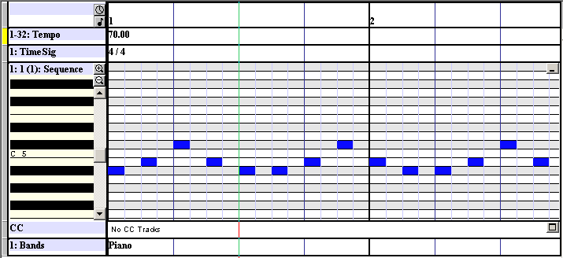
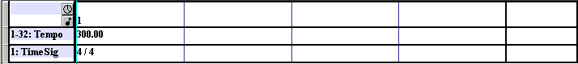
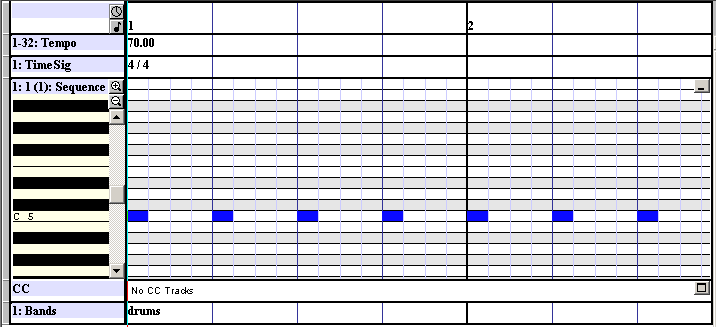
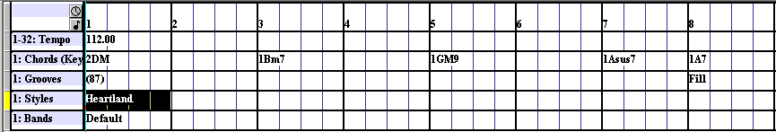
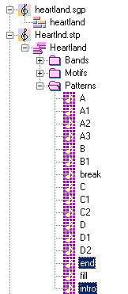
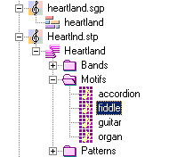

Using HTML+TIME with DirectMusic | Internet Development Index |
Microsoft?DirectMusic?is a component of Microsoft DirectX?that provides a medium over which music and sound effects can be played back. Music or sound effects composed for DirectMusic can be very flexible and can change dynamically over time or in response to a user event. This sound playback can be stored in relatively small files, which makes it very well suited for Web applications. DirectMusic's software synthesizer assures that MIDI files and DirectMusic segments sound identical on all hardware configurations rather than playing differently on different computers with different sound cards. HTML+TIME (Timed Interactive Multimedia Extensions) has many unique properties, methods, and events that allow you to control playback of DirectMusic in Web pages. This article briefly discusses some of the ways you can use HTML+TIME to add flexibility and control to DirectMusic content on the Web.
The following topics are discussed in this document.
- Prerequisites
- What Is DirectMusic?
- How HTML+TIME Works With DirectMusic
- DirectMusic Segments Types
- Styles
- Segment Transitions
- Motif Segments
- Other Properties of DirectMusic
- Related Topics
Prerequisites
The typical way to create content for DirectMusic is to use the Microsoft?DirectMusic?Producer program. The way HTML+TIME affects DirectMusic material depends in large part on how this material is created. Because of this, at a minimum, you should be familiar with composing sound playback using the DirecMusic Producer. Although a comprehensive discussion of DirectMusic Producer is beyond the scope of this article, you can find more information about this program by using the Help documentation of DirectMusic Producer, which can be downloaded from DirectMusic Producer.
It is assumed you know how to use Introduction to DHTML Behaviors, specifically, the time2 behavior of HTML+TIME. This article does not go into detail on how to add a behavior to your page, nor does it cover how to declare a namespace and use custom tags, as required by the time2 behavior. These topics are covered in the HTML+TIME Overview and Spice Up Your Web Pages with HTML+TIME. You should have a basic working knowledge of Dynamic HTML (DHTML).
What Is DirectMusic?
DirectMusic is included with Microsoft Windows?98 Second Edition, Windows Millennium Edition (Windows Me), and Windows 2000 components. In combination, the DirectMusic components provide a computer running Windows with the enhanced potential for playing music accompaniment and sound effects with a variety of applications including computer games and Web pages. Because this article deals with HTML+TIME, the discussion of DirectMusic is limited to its use in Web pages. Some key benefits of using DirectMusic content in Web pages are the following:
- DirectMusic content (music or sound effects) can be created such that it dynamically changes each time it is played.
- DirectMusic content sounds the same on all computers regardless of the hardware used by the computer.
- DirectMusic content can be contained in individual components called segments. These segments can be layered on top of one another, providing a flexible and powerful model for content composition. For more information, see DirectMusic Segments Types.
You can play MIDI and wave files using DirectMusic. Alternatively, you can use DirectMusic Producer to create sound files that take advantage of DirectMusic's interactive features. Rather than a static playback, this sound content can provide, if the music author chooses, a flexible and variable playback. For example, you could have a music segment that plays in a loop over and over. Each time it loops, the music would change such that a listener would never hear the music the same way twice. In addition, HTML+TIME DirectMusic player allows the music composer to choose from one to 80 pchannels (channels) rather than the one through 16 channels offered by the MIDI format. Some of the main run-time files created by DirectMusic Producer are the .sgt, .sty, or .dls extensions. These files correspond to certain components that can be created in DirectMusic Producer.
- The .sgt files correspond to segments; for information about them, see DirectMusic Segments Types. Segments are the controlling components of the music, coordinating the way the music is played.
- The .sty files correspond to styles; for information about them, see Styles. Styles can be used by segments to introduce content and variability to playback.
- A downloadable sound (DLS) is a self-contained, synthesized instrument sound that you design using the Microsoft DLS Designer in DirectMusic Producer. DLS files are not discussed in this article. For more information about DLS files, see DirectMusic Producer?B>Help.
The .sty (styles) and dls files are essentially support files for .sgt (segment) files that are used to enhance DirectMusic content. When working with content created by DirectMusic Producer, HTML+TIME elements only directly access .sgt (segment) files as source files for DirectMusic playback. Because of this, much of the discussion and samples of this article revolves around segments. However, the components of the supporting .sty files determine what transitions and motifs are available to HTML+TIME. Transitions and motifs are discussed later in this article.
How HTML+TIME Works With DirectMusic
Composing music using DirectMusic Producer enables a great deal of flexibility when creating the audio material and HTML+TIME can be used to control various aspects of playback directly from the Web page. Here is a list of examples of things that HTML+TIME can control when playing DirectMusic content.
- Control the timing, duration, and activation/ending of DirectMusic segments.
- Create transitions between the playback of segments.
- Control the volume, speed, and mute during playback.
In Web pages, control like this can be accomplished by playing the DirectMusic content inside of a t:AUDIO element and applying various HTML+TIME methods, properties, and events to the t:AUDIO element. Some of these HTML+TIME components are available to all types of media that use HTML+TIME. Examples include the following:
- Attributes/Properties like t:DUR, BEGIN, and END.
- Methods like beginElement and endElement
- Events like onbegin, onend, and onmediacomplete.
The following sample shows how to play a DirectMusic segment, use some HTML+TIME components to control playback, and determine whether the user has DirectMusic installed.
<HTML XMLNS:t ="urn:schemas-microsoft-com:time">
<HEAD>
<?IMPORT namespace="t" implementation="#default#time2">
<STYLE>
.time {behavior: url(#default#time2);}
</STYLE>
</HEAD>
<BODY>
<!-- This SPAN displays if the user has DirectMusic installed. -->
Is DirectMusic Installed? <SPAN STYLE="color:red" id="oDisplay" ></SPAN>
<BR><BR>
<!-- The BEGIN attribute specifies that the content will be played when
the button is clicked. However, the button is disabled until the content
is completely downloaded (the onmediacomplete event is fired). -->
<t:AUDIO ID="oSegment1" SRC="basicBeat.sgt" PLAYER="dmusic" BEGIN="oButton.click"
onmediacomplete="oButton.innerText = 'Start Music';oButton.disabled = false;
oDisplay.innerText = oSegment1.playerObject.isDirectMusicInstalled;"/>
<BUTTON DISABLED ID="oButton">Loading Music</BUTTON>
</BODY>
</HTML>
There are a few things to note about the preceeding example. First, it is always required to include the PLAYER attribute and set it to a value of dmusic in order for DirectMusic to play. Second, in this example, the BEGIN attribute is used to specify that the content is played when the button is clicked. Notice that the isDirectMusicInstalled property is used to display in the SPAN element whether the user looking at the Web page has DirectMusic installed. The isDirectMusicInstalled property is an example of a property that is only available when working with DirectMusic content. While common HTML+TIME components are useful for basic control of timing and playback of DirectMusic content, other unique HTML+TIME attributes that are only applicable to DirectMusic content are useful for more control over the specific components of content created in DirectMusic Producer. The following table lists some of these attributes.
| Component Name | Description |
|---|---|
| isDirectMusicInstalled | Property that retrieves a Boolean value that indicates whether DirectMusic is installed on the machine. |
| segmentType | Attribute that sets a value that indicates whether to play a DirectMusic segment as a controlling or secondary segment. |
| boundary | Attribute that sets a value that determines when one segment should begin to play in relation to another segment. |
| TRANSITIONTYPE | Attribute that sets or retrieves the type of DirectMusic transition to use between segments. |
| modulate | Attribute that sets a value that indicates whether to attempt to modulate between keys when playing transitions with DirectMusic. |
| motifName | Attribute that sets the name of the DirectMusic motif to play. |
The effect of some of these attributes on DirectMusic content depends on what components make up the content and how those components were created in DirectMusic Producer. The following sections explore in more detail the structural components of DirectMusic such as segments and styles and how these components can be manipulated using many of the attributes in the preceding table.
DirectMusic Segments Types
The segment is the fundamental building block of DirectMusic content. A segment functions as a holder for multiple musical elements. These elements provide the notes, rests, rhythms, chords, and instrument choices for a performance. As you create a segment in DirectMusic Producer, you can specify the tempo, length, number of repeats, and other parameters for how the segment plays.
Segments can be played by themselves, one after the other, or simultaneously with other segments. The way the segments play together can be specified using HTML+TIME code. Beyond basic timing and duration control of the segments, you can specify what the segment type is. This is done using the segmentType attribute. This attribute can have the value of primary, secondary, or control, which correspond to specifying that the segment is a primary, secondary, or control segment, respectively. How a segment behaves when played with other segments (its relationship with other segments) depends on what type of segment it is. The following three sections discuss the different segment types and their behavior.
Primary Segments
The primary segment can be considered the base segment of the musical composition. Other segments can play over a primary segment to enhance it; for further information about these other segments, see Secondary Segments segments. No more than one primary segment can play at a time. Therefore, if you are playing a primary segment and then start up another one, the first segment stops and the new one begins playing from its beginning.
The following example shows what happens when a new primary sample begins one second after the first one begins. The first primary segment is the same as the segment used in the preceding examples. Here is what the second primary segment looks like in the segment editor of DirectMusic Producer.

The musical note content is defined in a sequence track. It consists of musical notes going up and down in scale and lasts two measures.
... <t:AUDIO ID="oSegment1" SEGMENTTYPE="primary" SRC="basicBeat.sgt" PLAYER="dmusic" BEGIN="oButton.click"/> <t:AUDIO ID="oSegment2" SEGMENTTYPE="primary" SRC="scale.sgt" PLAYER="dmusic" BOUNDARY="immediate" BEGIN="oSegment1.begin+1"/> <BUTTON ID="oButton">Start Music</BUTTON> ...
In the previous example, notice that the second primary segment begins playing immediately when it starts on the time line. This is because the boundary attribute was set to immediate. The boundary attribute determines when one segment begins relative to another. Here is the same example again, except this time the boundary attribute is set to measure.
... <t:AUDIO ID="oSegment1" SEGMENTTYPE="primary" SRC="basicBeat.sgt" PLAYER="dmusic" BEGIN="oButton.click"/> <t:AUDIO ID="oSegment2" SEGMENTTYPE="primary" SRC="scale.sgt" PLAYER="dmusic" BOUNDARY="measure" BEGIN="oSegment1.begin+1"/> <BUTTON ID="oButton">Start Music</BUTTON> ...
Secondary Segments
The DirectMusic is capable of playing any number of segment files simultaneously. In this way, a developer of an application or Web page can combine multiple events and music elements with as much layering as desired. As an example, these segments could correspond to different musical parts such as percussion or melody. These segments can be played at any time, for any period, and in any order.
As already mentioned, there can only be one primary segment; therefore, all other segments that are to play at the same time must be secondary. You specify that a segment is secondary by setting the segmentType attribute to a value of secondary. The following example is identical to the preceding one with one difference: the segmentType attribute is set to secondary on the segment that begins while the primary one is playing. Rather than stop the primary segment, the secondary segment plays on top of it.
... <t:AUDIO ID="oSegment1" SRC="basicBeat.sgt" PLAYER="dmusic" BEGIN="oButton.click"/> <t:AUDIO ID="oSegment2" SEGMENTTYPE="secondary" SRC="scale.sgt" PLAYER="dmusic" BEGIN="oSegment1.begin+1"/> <BUTTON ID="oButton">Start Music</BUTTON> ...
In the preceding example, the secondary segment begins immediately after the segment begins on the time line. Just like primary segments, you can use the boundary attribute to control when the secondary segment begins playing.
Controlling Secondary Segments
You can designate a secondary segment as a controlling secondary segment so that elements of the secondary segment change the behavior of the primary segment. When you play a primary segment and a controlling secondary segment simultaneously, some tracks in the controlling segment affect and essentially replace the corresponding tracks of the primary segment. When playback of the secondary segment stops, playback of the primary segment reverts to its original state.
For example, a controlling secondary segment might contain a chord track and a groove track. If you play a primary segment and then start playback of the controlling segment while the primary segment is playing, the secondary segment's chord and groove tracks temporarily replace the chords and the grooves of the primary segment. When playback of the secondary segment stops, playback of the primary segment reverts to using information in its own chord and groove tracks.
A controlling segment can affect the playback behavior of all other segments that are playing simultaneously, including the primary segment and all other secondary segments. The following tracks in a controlling secondary segment, called controlling tracks, override the contents of tracks in other segments.
- Chord track
- Groove track
- Mute track
- Tempo track
The following sample shows how to have a secondary segment change the tempo of the primary segment when it plays. The control segment is a segment with no musical note content. It only has a tempo track. Here is what the segment looks like in the DirectMusic Producer segment editor.

Notice that the tempo track is set for 300. This is much higher than the tempo track in the primary sequence of 70.

After the controlling secondary segment ends (after one measure), the primary segment's tempo resumes control.
... <t:AUDIO ID="oSegment1" SEGMENTTYPE="primary" SRC="basicBeat.sgt" PLAYER="dmusic" BEGIN="oButton.click"/> <t:AUDIO ID="oSegment2" SEGMENTTYPE="control" SRC="tempoSegment.sgt" PLAYER="dmusic" BEGIN="oSegment1.begin+1"/> <BUTTON ID="oButton">Start Music</BUTTON> ...
Styles
So far, the samples shown have only used sequence tracks to provide musical notes. Sequence tracks are satisfactory when you do not want the sound content to vary much each time it is played. For greater variability, it is better to get the musical content from styles. Styles are created in DirectMusic Producer. The musical notes of styles are specified in components called patterns and motifs. The following two sections illustrate how HTML+TIME can be used with patterns and motifs.
Segment Transitions
The phrases of a style are usually divided into separate patterns. How patterns are played in a segment is specified when the segment is created. Although you cannot access the patterns directly from HTML+TIME during the active period of the segment, you can have a specific pattern play as a beginning transition and ending transition. You do this by creating patterns with embellishments in DirectMusic Producer. Embellishments correspond to different parts of a musical performance. Examples of embellishments are intro, fill, end, or break. For information on creating embellishments, see the Help documentation of DirectMusic Producer. Once a pattern has an embellishment, you can specify that pattern as the pattern to play on a single segment or to play as one primary segment transitions to another primary segment. For example, the segment heartland.sgt plays a style in its style track called heartland.

The style called heartland has patterns called intro and end. These patterns are shown here.

The pattern called intro has the intro embellishment associated with it, and the pattern called end has the end embellishment associated with it. When the heartland segment is played in HTML+TIME, the default behavior is to play the intro pattern first and the end pattern last. The following example shows this default behavior.
... <t:AUDIO ID="oSegment1" DUR="8" SEGMENTTYPE="primary" SRC="heartland.sgt" PLAYER="dmusic" BEGIN="oButton.click"/> <BUTTON ID="oButton">Start Music</BUTTON> ...
You can alter the transitions played by an individual segment or the transitions between primary segments by using the TRANSITIONTYPE attribute. There are a number of possible values for this attribute that allow this control. The following sample shows how you can specify that no transition is played on a segment by setting the TRANSITIONTYPE attribute to a value of none.
<t:AUDIO ID="oSegment1" DUR="8" TRANSITIONTYPE="none" SEGMENTTYPE="primary" SRC="heartland.sgt" PLAYER="dmusic" BEGIN="oButton.click"/> <BUTTON ID="oButton">Start Music</BUTTON>
Motif Segments
A motif is a melodic or rhythmic figure, usually brief, or a sound you design to layer over other music. A motif can be played at any time during a performance and can be thought of as an explicitly defined sound or set of sounds/music that plays without interrupting the content playing by the various segments involved in a composition. A motif is created inside of a style. However, a motif cannot be played by segments like style patterns can, rather, they must be played explicitly from code. HTML+TIME uses the motifName attribute to specify what motif to play. In order to use the motifName, the t:AUDIO element must be playing a segment that includes the style containing the motif. For example, using the same segment as the previous sample, the style called heartland, which is played by the heartland segment, has a motif called fiddle.

To play the "fiddle" motif using HTML+TIME, you could use the following code.
... <t:AUDIO ID="oSegment1" DUR="8" SEGMENTTYPE="primary" SRC="basicBeat.sgt" PLAYER="dmusic" BEGIN="oButton.click"/> <t:AUDIO ID="oSegment2" DUR="8" MOTIFNAME="fiddle" SRC="heartland.sgt" PLAYER="dmusic" BEGIN="oSegment1.begin+1"/> <BUTTON ID="oButton">Start Music</BUTTON> ...
Notice that the rest of the music of hearland does not play—only the motif.
Other Properties of DirectMusic
As already mentioned, it is important to remember that DirectMusic content is treated like other types of media that is played by HTML+TIME, and these media types all share many properties, methods, and so forth. The following example shows how to control various properties of DirectMusic playback.
...
<STYLE>
.time {behavior: url(#default#time2);}
@media all
{
control\:slider {behavior:url(slider.htc);}
}
</STYLE>
...
<t:AUDIO ID="oSegment1" TRANSITIONTYPE="NONE" BOUNDARY="IMMEDIATE" DUR="8"
BEGIN="indefinite" SEGMENTTYPE="primary" SRC="heartland.sgt" PLAYER="dmusic"
/>
<!-- HTML+TIME methods are used to enable begin, stop, pause, and resume
functionality. -->
<BUTTON ID="oStart" onclick="oSegment1.beginElement();">Start</BUTTON>
<BUTTON DISABLED ID="oStop" onclick="oSegment1.endElement();">Stop</BUTTON>
<BUTTON DISABLED ID="oPause" onclick="oSegment1.pauseElement();">Pause</BUTTON>
<BUTTON DISABLED ID="oResume" onclick="oSegment1.resumeElement();">Resume</BUTTON>
Volume:
<!-- Volume controler. This uses the slider control behavior. -->
<control:slider style="sl--tick-style : none; " VALUE = "100" ID="oSliderVolume"
MIN="0" MAX="100" TICKINTERVAL="1" TICKNUMBER="100"
onchange="oSegment1.volume = oSliderVolume.value;">
</control:slider>
Speed:
<!-- Speed controller. This uses the slider control behavior. -->
<control:slider style="sl--tick-style : none; " VALUE = "1" ID="oSliderSpeed"
MIN=".5" MAX="2" TICKINTERVAL=".1" TICKNUMBER="15"
onchange="oSegment1.speed = oSliderSpeed.value;">
</control:slider>
Mute:
<input id="oMuteControl" type="Checkbox"
onclick="if(oMuteControl.checked){oSegment1.mute = true;}else{oSegment1.mute = false;}">
...